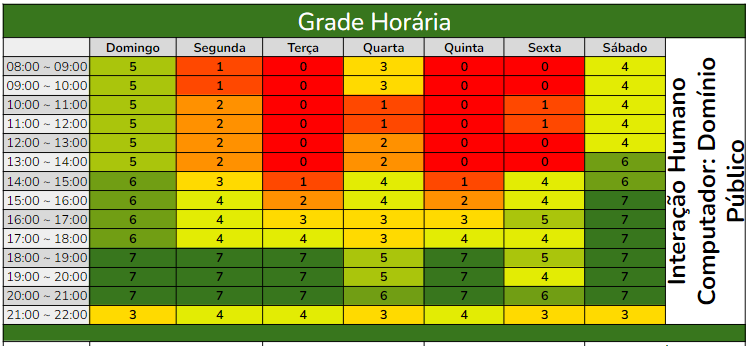
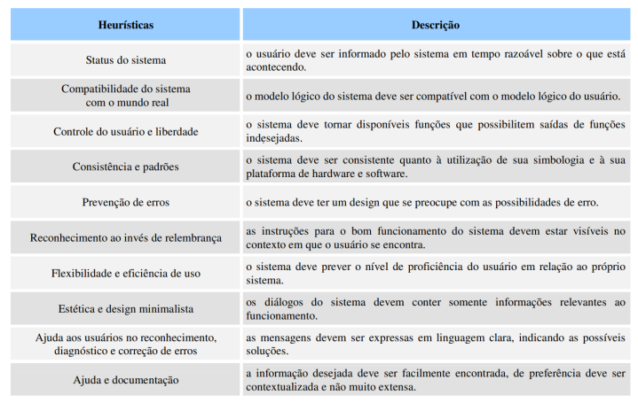

Metodologia
Introdução
A metodologia é o conjunto de processos, técnicas e práticas para organizar e guiar a execução do projeto de forma eficaz e eficiente. Refere-se ao todo, desde o planjemento até a conclusão, asseurando que metas sejam alcançadas de maneira consisa e controlada. Para o desenvolvimento desse projeto a equipe escolheu usar o SCRUM devido a familiaridade, KANBAN devido a facilidade de uso e a AVALIAÇÃO HEURÍSTICA pelo amplo conhecimento. Além de definir politicas de commit, branchs e criação de issues.
Scrum
O Scrum é uma estrutura ágil de gestão de projetos amplamente utilizada. Ele é realizado em ciclos, denominados sprints, onde ocorrem reuniões de planejamento, para definir o que será realizado no ciclo, análise, para validar os produtos desenvolvidos, e retrospectiva, visando avaliar aspectos positivos e negativos que ocorreram ao longo da sprint. Além disso, ele é estruturado para que as equipes possam se adaptar as mudanças que ocorrem ao longo da execução de um projeto, permitindo a repriorização e mudanças de requisitos.
O Scrum pode ser adaptado de acordo com a necessidade da equipe, mas sempre focando na comunicação clara e transparência. No desenvolvimento deste projeto o grupo realizou algumas adaptações no Scrum, para que ele se adequasse melhor às necessidades encontradas. Desta forma, optamos por não ter Product Owner(Dono do Produto) e Scrum Master(Mestre Scrum), distribuindo as tarefas de forma horizontal e fazendo com que todos os membros sejam igualmente importantes para a realização do projeto. Nossas sprints(Ciclos) serão de 07 dias, realizaremos dailys(Reuniões diárias) assíncronas por mensagens em horários em que todos os membros estão disponíveis e as outras cerimônias como planejamento (planning), análise (review) e retrospectiva (retrospective) em reuniões conforme ilustrado na Figura 1:.
Figura 1: Metodologia Scrum

Fonte: GS1 Brasil, 2021
- Daily: Diariamente, via telegram a partir das 18h
- Planning, Review e Retrospective: segunda, 19h
Vale ressaltar que a escolha do dia de reunião se baseou em uma planilha de disponibilidade de horários preenchida pela equipe ao início do desenvolvimento. Na Figura 2, quanto mais verde uma área, maior a disponibilidade de membros.
Figura 2: Mapeamento de disponibilidade da equipe

Autores: Maria Alice e Victor Hugo, 2023
Quadros kanban
Os quadros kanban são quadros de organização em formato de cartão, que permitem que a equipe tenha uma visualização clara do o fluxo de trabalho. Ele costuma ser dividir as tarefas de acordo com seu progresso, podendo se dividir em:
- A fazer
- Fazendo
- A revisar
- Em revisão
- Finalizado
Além disso, cada cartão possui as seguinte informações para descrever, organizar e priorizar as tarefas a serem realizadas:
- Nome e descrição
- Responsável
- Revisor
- Data inicial e final
- Nível de prioridade
Avaliação heurística
O grupo adota a avaliação heurística como um método de avaliação em Interação Humano-Computador (IHC) desenvolvido com o propósito de identificar problemas de usabilidade durante o processo de design em iterações (Nielsen e Molich, 1990; Nielsen, 1993; Nielsen, 1994a). Este método orienta os avaliadores na inspeção, com o intuito de identificar problemas que possam afetar a usabilidade.
A avaliação se baseia em um conjunto de diretrizes de usabilidade que descrevem características desejáveis da interação e da interface, conhecidas como heurísticas, conforme definidas por Nielsen (1993). Na Figura 3, seguem as 10 regras:
Figura 3: Heurísticas Propostas por Nielsen

Fonte: NIELSEN, 1994, p.30
Politica de issues
Quando abrir um issue?
- Identificação de Bugs ou defeitos
- Solicitação de Melhorias
- Tarefas ou Atividades
- Discussões e Decisões
Como participar de uma issue?
- Comunique ao criador da issue o desejo de participação
Politica de Branchs
Cada membro realizará commits através de uma branch individual, de forma a evitar que ocorram conflitos e que alterações sejam sobrescritas devido a códigos desatualizados. Para a criação das branchs os membros deves escolher nomes significativos, visando expor seu objetivo na criação da branch, evitar o uso de caracteres especiais e acentos. Além disso, após a aprovação de um pull request, a branch deve ser excluída.
Politica de commit
Ao realizar um commit, os membros devem se certificar de estar com o código atualizado, funcionando, na branch correta e seguir o seguinte padrão de commit:
docs- para commits onde foram realizadas alterações na documentaçãofix- para commits que realizam a correção de problemasfeat- para a inclusão de novos arquivosdel- para a remoção de arquivos
Já para a realizar pull request, devem colocar um membro para realizar a revisão do conteúdo e acompanhar quais alterações ou comentários foram feitos pelo revisor. O revisor por sua vez deve verificar a possibilidade de conflitos, quais alterações foram realizadas e deixar um comentário sobre o que foi avaliado. Vale destacar que a equipe realizará commits frequentes e pequenos, de forma a verificar o mais cedo possível a ocorrencia de conflitos e erros, além de facilitar a revisão de código.
Bibliografia
BARBOSA, Simone; DINIZ, Bruno. Interação Humano - Computador, Editora Elsevier, Rio de Janeiro, 2010.
GS1 Brasil. Imagem ilustrativa sobre Scrum. 2023. Disponível em: https://noticias.gs1br.org/scrum-veja-como-usar-abordagem-nos-negocios/. Acesso em: 30/09/2023.
6. Google Planilhas. Disponível em: https://www.google.com/intl/pt-BR/sheets/about/. Acesso em: 28 de set. de 2023.
Histórico de versões
| Versão | Data | Descrição | Autor(es) | Revisor(es) |
|---|---|---|---|---|
| 1.0 | 28/09/2023 | Estrutura inicial | Maria Alice e Victor Hugo | Luciano Ricardo |
| 1.1 | 29/09/2023 | Correções | Victor Hugo | Luciano Ricardo |
| 1.2 | 30/09/2023 | Atualiza metodologias adicionando imagem do scrum e novo tópico de heurísticas | Gustavo França | Luciano Ricardo e Victor Hugo |
| 1.3 | 04/10/2023 | Correção de Erros | Maria Alice | Victor Hugo |